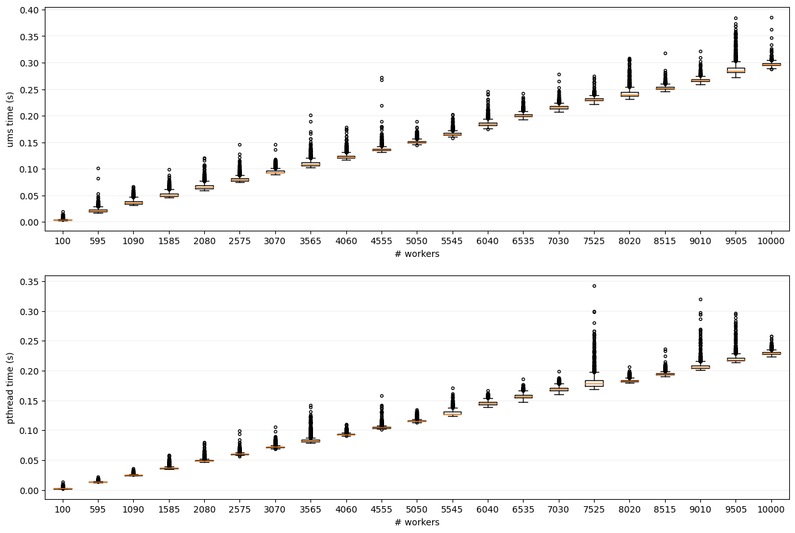

Benchmarks
The following results are obtained on a Hyper-Threading Intel(R) Core(TM) i7-8700K CPU @ 3.70GHz with 6 cores (12 threads).
The benchmark program1 consists of a set of UMS schedulers (one per-CPU core) managing a set of UMS worker threads and all sharing a single completion list. Each UMS worker thread compute the same task of executing a primality test over a 16-bit prime number.
The UMS library solution performs slightly worse than the system default one due to the fact that a mode switch is needed for executing and yielding a UMS context.
- 1
source code at
benchmark/bin/src/main.c